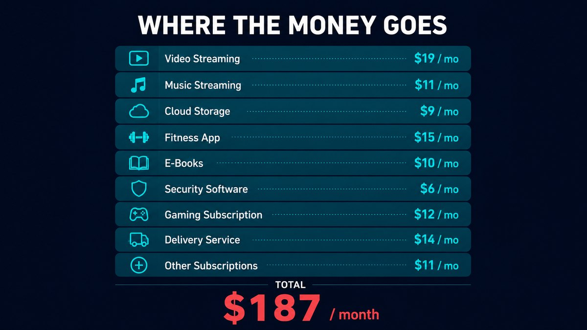
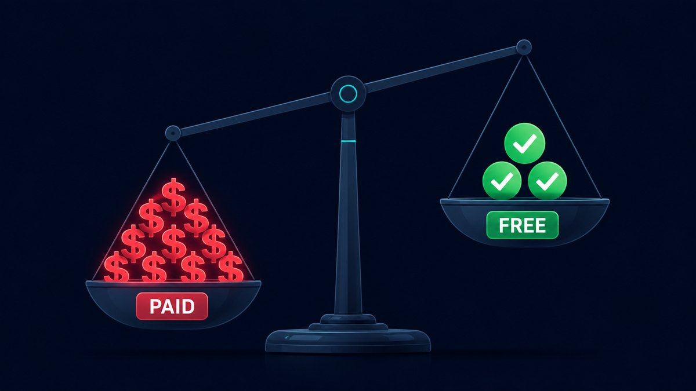

A few months ago I actually sat down and added up every monthly subscription I was paying for software. The number was $187 a month — about $2,200 a year — for apps I used, on average, a few times a week.
I build free software for a living, so this was a little embarrassing. I spent a weekend replacing as much of it as I could with free tools — some I made, most I didn't. Here's the whole list, what each one cost, what I replaced it with, and where the free option genuinely falls short. No "everything free is just as good" nonsense. Some of it is a real trade-off.
The tally: what I was actually paying
For most people, a $187 subscription pile looks a lot like this — a couple of streaming services, music, a fitness app, cloud storage, a few odds and ends. It creeps up a few dollars at a time until you stop noticing it:

Mine landed at almost exactly the same number, but skewed heavily toward software tools — because building software is my job, so I'd quietly accumulated a subscription for nearly every category. Here's my actual breakdown, roughly in order of how much each one stung:
| Paid app | Was paying | Replaced with |
|---|---|---|
| Adobe Acrobat Pro | $20/mo | RBS PDF Editor (free) |
| ChatGPT Plus | $20/mo | Free AI tiers |
| An AI voice tool | $22/mo | RBS Voice Cloner V2 (free) |
| Canva Pro | $13/mo | Canva Free / Photopea |
| Grammarly Premium | $12/mo | LanguageTool (free) |
| Notion Plus | $10/mo | Obsidian / Life Dashboard |
| A PC optimizer suite | $15/mo | RBS PC Cleaner + Optimizer |
| Cloud storage upgrade | $12/mo | Local + free tiers |
| A paid VPN | $12/mo | Kept it (worth it) |
| Misc small subs (×5) | $51/mo | Mostly cancelled |
I didn't cancel everything — the VPN earned its keep and a couple of niche tools had no real free equal. But the big ones all had a free replacement that was good enough, and in a few cases actually better.
The swaps that actually worked
1. Adobe Acrobat Pro → a free offline PDF editor
This was the easy $20/month to kill. I needed to edit text, sign documents, OCR the odd scan and merge files — none of which justifies a subscription. I now use my own RBS PDF Editor, which does all of that offline with no watermark and no account. If you don't want to use mine, LibreOffice Draw handles basic PDF edits for free too. Saved: $20/mo.
2. ChatGPT Plus → the free AI tiers
I still use AI every day, I just stopped paying $20 a month for it. In 2026 the free tiers of the major assistants are genuinely useful for most everyday tasks. I keep one paid AI subscription for heavy work and use free tiers for everything else. Saved: $20/mo.
3. A $22/month AI voice tool → a free local voice cloner
Cloud voice tools charge by the character and your audio lives on their servers. I built RBS Voice Cloner V2 partly so I'd stop paying for this — it clones a voice from a short sample and runs locally after the first model download, with no monthly cap. It's not going to out-polish the biggest cloud labs on every voice, but for narration and drafts it's more than enough. Saved: $22/mo.
4. Canva Pro → Canva Free + Photopea
Canva's free tier covers most of what I made in Pro. For the heavier image editing I use Photopea (a free, browser-based Photoshop clone) or GIMP. Honest trade-off: I lost Canva's one-click background remover and the brand kit. Worth $13/month to me? No. Saved: $13/mo.
5. Grammarly Premium → LanguageTool
LanguageTool has a genuinely good free tier and a browser extension that catches the same class of mistakes. The premium grammar suggestions are a notch below Grammarly's, but for catching typos and clumsy sentences it's fine. Saved: $12/mo.
6. Notion Plus → Obsidian (and a dashboard I built)
Notion is great, but I was paying for sync and history I rarely touched. Obsidian is free for personal use and stores notes as plain files on your own disk. For habit, task and finance tracking I use RBS Life Dashboard, which keeps everything local. Saved: $10/mo.
7. A paid PC optimizer → free cleanup tools
I'd been paying for a "PC speed-up" suite that mostly did things Windows already does. I replaced it with RBS PC Cleaner and Optimizer Pro — free, offline, no registry voodoo, no fake "your PC is at risk" scores. Saved: $15/mo.
The result

After the weekend I'd gone from $187/month to about $32/month (one AI subscription and the VPN). That's roughly $155 a month back — close to $1,860 a year — for tools that, for my actual usage, do the same job.
The honest part: a few things got slightly worse. Photopea isn't quite Photoshop. LanguageTool isn't quite Grammarly. The free AI tiers have limits. But "slightly worse and free" beat "slightly better and $2,200 a year" in almost every case.
How to do this yourself in one evening
- List every subscription. Check your bank and app-store statements for the last two months — you'll find ones you forgot.
- For each, ask: do I use this weekly? If not, cancel it now. You can always resubscribe.
- For the ones you keep, search "[app] free alternative". Most categories have a genuinely good free option in 2026.
- Prefer offline / local tools when your files are sensitive. Free cloud tools often pay for themselves with your data.
- Re-check in 30 days. If you didn't miss the paid version, you've found your number.
The free RBS apps in this post
All free, offline, no account: PDF Editor · Voice Cloner V2 · PC Cleaner · Optimizer Pro · Life Dashboard. Browse all →
Bottom line
You probably don't need to cut everything — some subscriptions genuinely earn their price. But most people are paying monthly for two or three things that have a free replacement they'd never notice the difference from. An hour with your bank statement is the highest hourly rate you'll earn all year.
Got a subscription you can't find a free replacement for? Tell me on the contact page — if enough people are stuck on the same one, it might be the next thing I build.